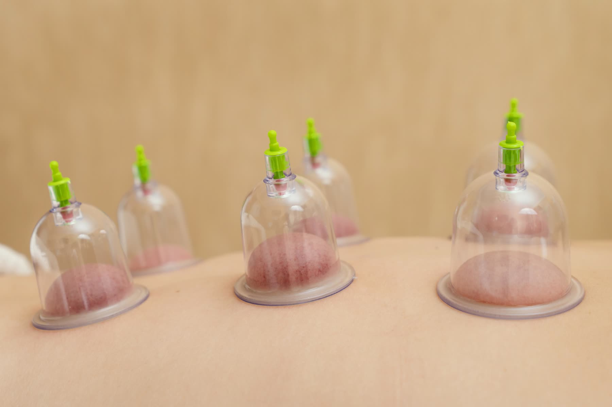
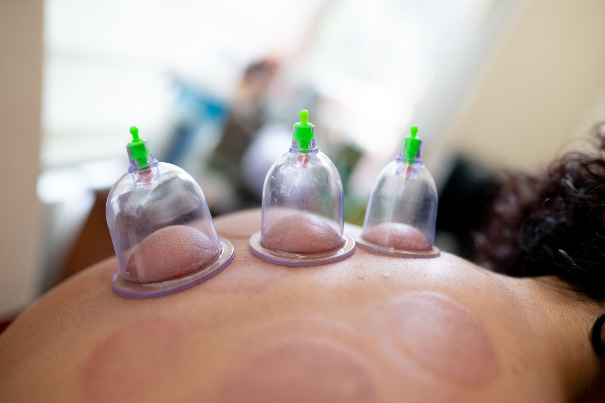
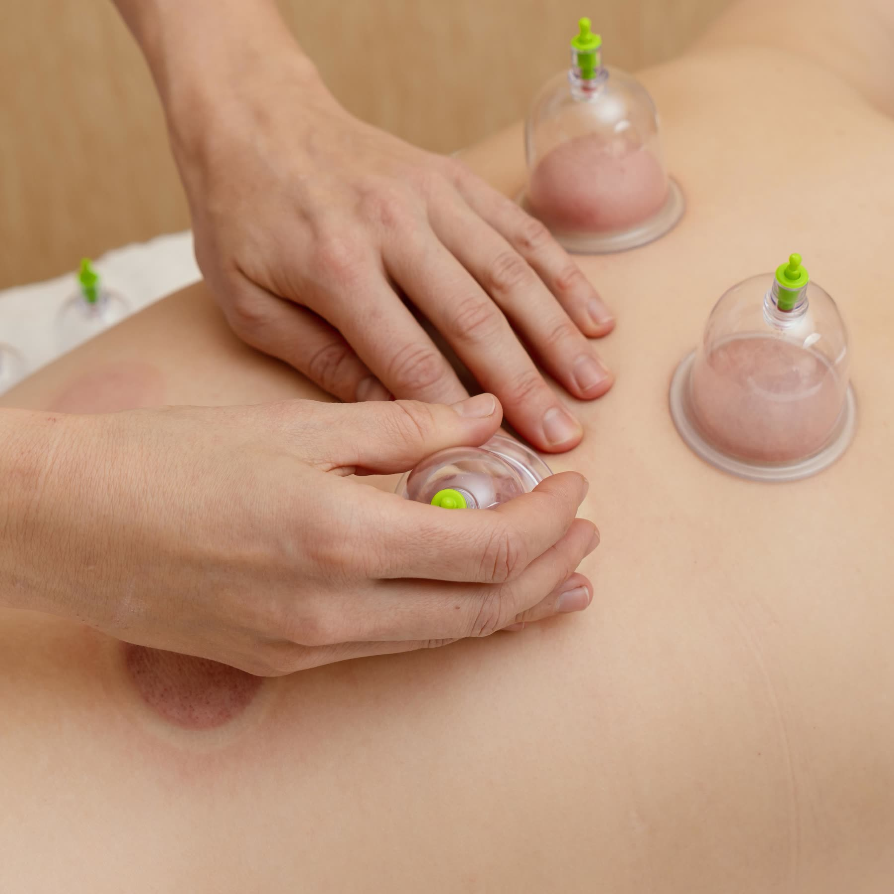
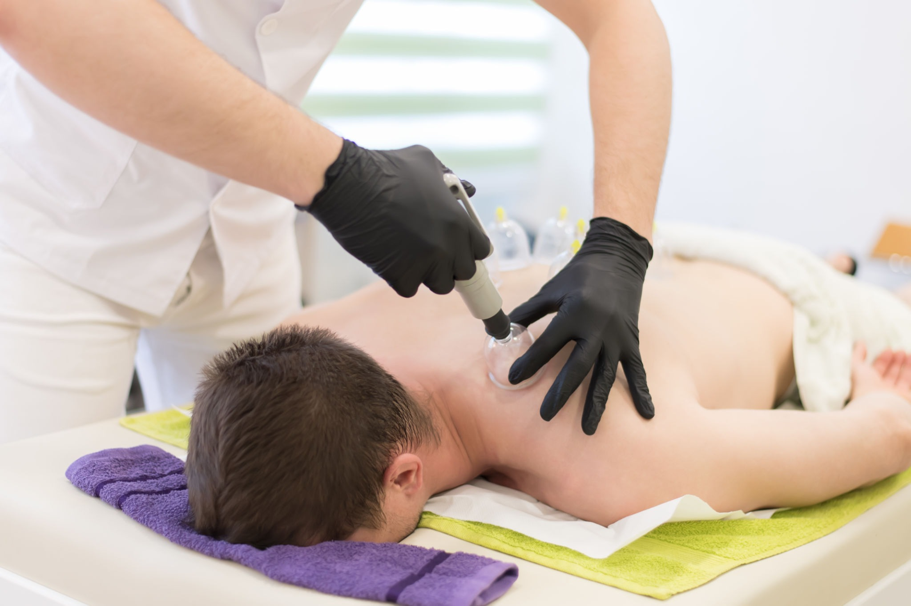
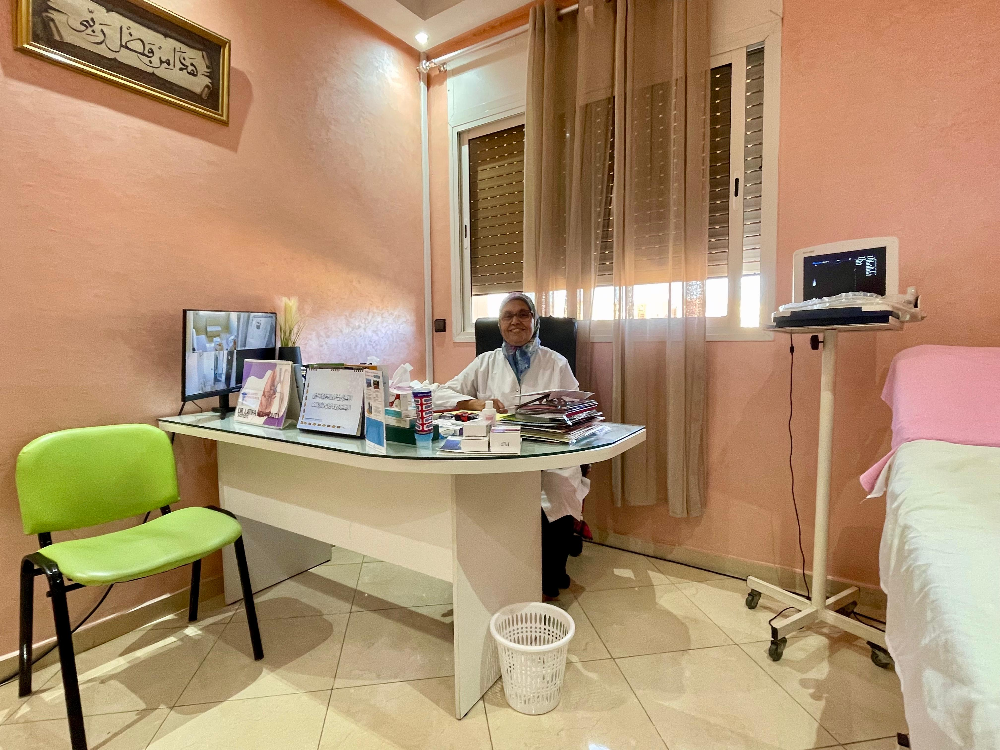
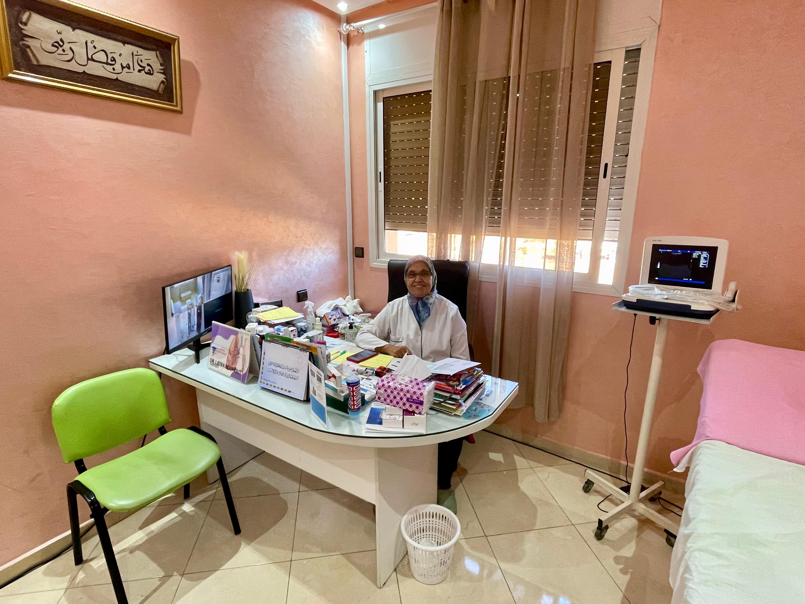
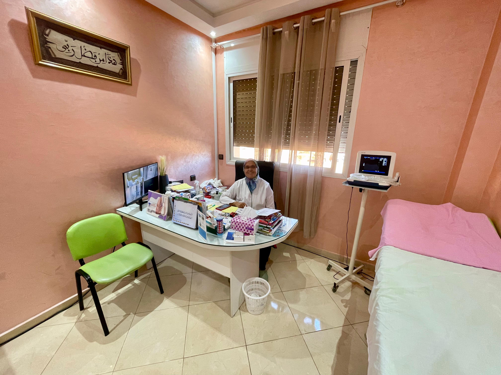
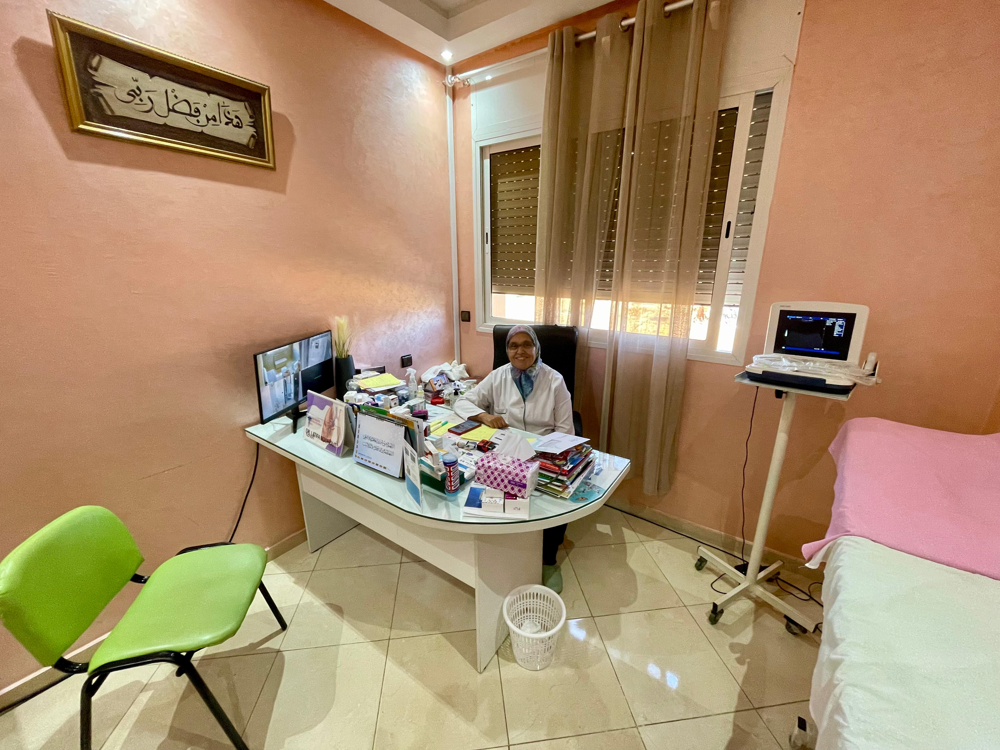
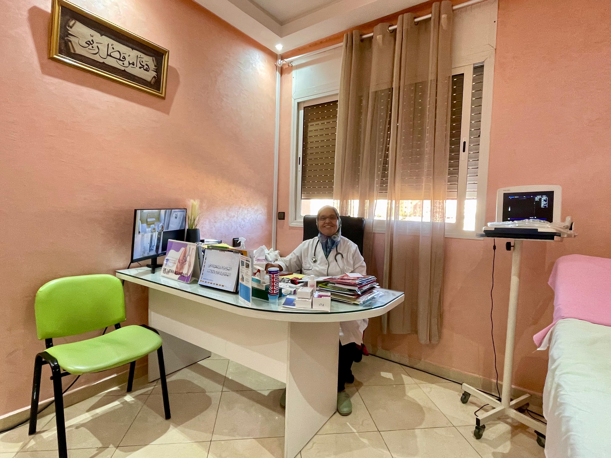

01
Gestion de la douleur
Efficace contre les douleurs dorsales, cervicales, scapulaires et articulaires. La Hijama améliore le flux sanguin local et libère les tensions myofasciales chroniques.

Cabinets médicaux alliant médecine générale conventionnelle et Hijama médicale. Soins personnalisés, suivi régulier, approche bienveillante.

« L'une des meilleures thérapies dont vous disposez. » — Tradition prophétique
Thérapie ancestrale validée par 3 000 ans de pratique, recommandée par Hippocrate, codifiée par Avicenne et confirmée par les études cliniques modernes (PLOS ONE, PubMed). Au cabinet, encadrée par un protocole médical strict.
Médecin généraliste avec plus de 30 ans d'expérience clinique, formée à la Hijama médicale et à la médecine traditionnelle chinoise.
Autoclave classe B, ventouses et lancettes à usage unique ouvertes devant vous, conteneurs DASRI conformes pour l'élimination des déchets piquants.
Bilan complet avant la première séance, vérification des contre-indications, protocole adapté à votre histoire médicale et à votre traitement en cours.
La Hijama s'inscrit en médecine complémentaire, jamais alternative. Compte-rendu transmissible à votre médecin traitant sur demande.
Tabriquet, Salé. Horaires souples du lundi au samedi. Rendez-vous généralement disponibles dans la semaine.
Efficace contre les douleurs dorsales, cervicales, scapulaires et articulaires. La Hijama améliore le flux sanguin local et libère les tensions myofasciales chroniques.
Élimine les déchets métaboliques et soutient le travail naturel du foie et des reins, favorisant un nettoyage cellulaire profond.
Stimule le système nerveux parasympathique, déclenchant une réponse de relaxation profonde, améliorant le sommeil et réduisant l'anxiété.
Attire le sang oxygéné vers les zones traitées, accélère la récupération musculaire et soutient la microcirculation périphérique.
Pourrait stimuler la production de globules blancs et activer la réponse immunitaire face aux pathologies infectieuses récurrentes.
Lombalgies chroniques · Migraines · SOPK · Anxiété · Fatigue · Arthrose · Troubles digestifs · Insomnies. Et bien d'autres indications selon votre bilan.

Lombalgies, dorsalgies, cervicalgies, sciatiques. Soulagement souvent perceptible dès la première séance.

Régule le système nerveux autonome, améliore le sommeil, allège la charge somatique du stress chronique.
Soutient la perte de poids en complément d'une hygiène de vie. Stimulation circulatoire et drainante.
Céphalées de tension, migraines chroniques et épisodiques. Bilan neurologique préalable obligatoire.
Approche complémentaire aux protocoles de PMA. Drainage du petit bassin et soutien hormonal global.
Syndrome des ovaires polykystiques. Régulation hormonale, anti-inflammatoire et insulino-régulatrice.

Aspiration sans incision. Tensions musculaires, fascia, récupération sportive, troubles circulatoires.
Récupération musculaire, tendinopathies de l'effort, performance. Trigger points et ventouses glissantes sur les zones sollicitées.
Cette liste est indicative, pas un diagnostic. Une évaluation complète est réalisée en cabinet. La Hijama ne se substitue pas à votre traitement médical — elle s'inscrit en médecine complémentaire. En cas de doute, consultez votre médecin traitant avant la séance.
La Hijama sèche n'est pas douloureuse — la plupart des patients décrivent une sensation d'aspiration et de chaleur. La Hijama humide comprend une scarification superficielle (environ 0,3 mm), comparable à un prélèvement capillaire au bout du doigt.
Pour une problématique aiguë, trois séances sur six semaines suffisent généralement. En entretien, une séance toutes les 8 à 12 semaines. Le rythme est adapté à votre situation, jamais surévalué.
La Hijama sèche laisse des marques circulaires similaires à des ecchymoses qui disparaissent en 5 à 10 jours. Les micro-incisions de la Hijama humide (0,3 mm) cicatrisent sans trace visible chez la grande majorité des patients à peau normale.
Oui. La Hijama s'inscrit en médecine complémentaire, pas alternative. Un compte-rendu peut être transmis à votre médecin traitant sur demande, en particulier si vous êtes sous anticoagulants ou traité(e) pour hypertension.
Avant : bien s'hydrater, repas léger, éviter l'effort intense la veille. Après : garder les sites couverts 24 h, pas de hammam ni piscine pendant 72 h, hydratation et repos. Un protocole écrit vous est remis à la fin de chaque séance.
La consultation médicale fait l'objet d'une feuille de soins remboursable selon votre couverture. La Hijama relève des soins complémentaires : un reçu détaillé est remis et certaines mutuelles peuvent prendre en charge tout ou partie. À vérifier auprès de votre organisme.





 Tradition
Tradition
La tradition prophétique recommande ces trois jours précis. Nous explorons les hadiths, le calendrier Hijri, et notre protocole pour ces journées spéciales.
Lire l'article→ Pratique
Pratique
Comment la thérapie par ventouses agit-elle sur les douleurs dorsales persistantes ? Études cliniques, protocole et résultats observés au cabinet.
Lire l'article→ Conseils
Conseils
Hydratation, repas léger, vêtements adaptés, traitements en cours… tout ce qu'il faut savoir pour bien préparer votre venue au cabinet.
Lire l'article→